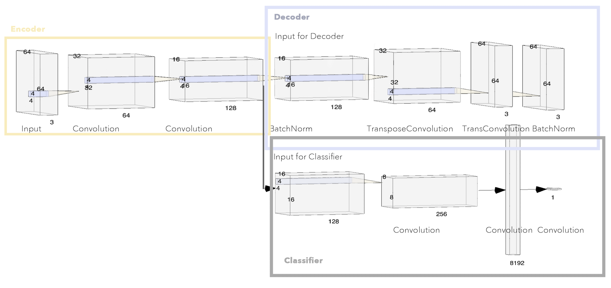

Art-Gan: Style and Genre Based Artwork Generation and Checkerboard Artifact Smoothing
ZITONG YANG, ANGIE WANG, ZHEKUN LUO
I. Problem Statement and Background
i. Background
Recent years, a number of models have achieved effectiveness in style based artwork classification and even in artwork style transfering. However, not util 2017 had people turned their eye on artwork synthesis using GAN. Not only did people in deep learning industry quickly casted their attention on Art Gan, the art market also seems to rapidly embrace GAN generated artworks. In October 2018, a famous auction house Christie’s became the first auction house to offer a artwork created by GAN and sold the piece for $432,500 (image 1-1).
February 2019 , a famous collector, Nicolas Laugero-Lasserre purchased Le Comte de Belamy (image 1-2), another artwork generated by GAN and described the innovation as "grotesque and amazing at the same time."

ii. Difficulty
The difficulty of this task comes from the unique characteristics wikiart dataset possess. Comparing to Cifar10 or Celeba dataset in which GAN has shown great promise on synthesizing images, artworks are not structurally shaped and the object and the background are not usually distinguishable. The high variance and the dissimilarity (even under the same style) of the dataset poses challenges of the performance of GAN.
A better performance of GAN on this task may broaden the application of conditional GAN on more and various datasets.
iii. Objective and Dataset
We aim at generating human interpretable artworks based on styles and genres*. The training data we used are from wikiart dataset which includes the raw jpg images for each artwork in wikiart , classified by styles such as Impressionism, Pointillism and Rocco etc. Dataset Download Link This is the updated link, the source we used was deprecated and removed by the author 32 days ago.
To obtain the genre classified wikiart dataset, we downloaded the csv file that contains image name and genre label from this link CSV Download Link , and parsed the original dataset with the labels.
iv. Evaluation
The difficulty of quantitatively evaluate the performance of GAN is witnessed. Quantitative measures like Coverage Metric and Average Log Likelihood are hard to directly apply to evaluate the quality of the images we generated. Thus, the evaluation method we used is simply side by side comparisons of result generated by different models and their level of aesthetics for the audience.
v. Related Works
* ArtGAN: Artwork Synthesis with Conditional Categorical GANs, 11 Feb 2017
* Improved ArtGAN for Conditional Synthesis of Natural Image and Artwork, 22 August 2018
* CAN: Creative Adversarial Networks, Generating "Art" by Learning About Styles and Deviating from Style Norms, Jun 2017
II. Preparation
i. Data Preprocessing
Normalize and resize: The wikiart dataset only contains raw images of different sizes and resolutions. According to the paper of our baseline model (dc_gan), the recommended input size is 64 X 64. Thus we used center crop and resize to normalize the image dimension. We also normalized the RBG channels to subtract the mean to accelerate the training process. After the preprocessing, we stored the processed data as .pt files for more convenient transferring and usage.
Data augmentation: The wikiart dataset can be categorized in three ways, according to style, genre and author respectively. When the dataset is categorized by styles like Rococo or Pointillism, the sample size under each style are only from 300-6000. Besides, After we investigate into the pictures and dis some trial trainings, we figured out that the difference of artworks under different styles are too big that we can only train for one specific style each time for training to get good result. Hence, we get only around five thousands samples as our effective training size, and data augmentation is hence necessary. We used random crop to perform data augmentation and gets 4 times more training samples under each style.
ii. Baseline model
We tested out our preprocessed data on dcgan model.
However, dc_gan worked well with celeba_face dataset where the main object (human face) and the background are highly distinguishable, main object is centered and structure of each image highly resembles each other. Our trail training on the baseline model didn’t go smoothly. Since the significant difference in the training data, we need to adopt several training scheme: a. Apply different learning rates for discriminator and generator (we found that 1e-5 is a reasonable learning rate for discriminator and 1e-4~5e-4 is a good range for discriminator). b. Inconsistent updates to generator and discriminator (e.g one update to discriminator versus ten updates to discriminator). c. modify the number and size of the filters .
After adopting the above training schemes, we finally trained the model till convergence. However the resulted performance is still not desirable. There are two major problems a.The checkerboard artifacts are extremely obvious on the generated images and damages their quality (image 2-1). B. Since the data in wikiart set have significantly complicated structures and the discriminator of our baseline model is very simple, discriminator tends to outwin the generator unless we modify the hyperparameters and adopt training schemes very carefully.
To Solve the two problems raised above, we came up with two models, each aims to solve one of the above problems.
III. Improved Discriminator: Autoencoder Based Discriminator
i. Introduction
We observed from the training image that our network failed to to capture the underlying features of the artworks, even though Discriminator and Generator are both performing well in terms of their “classification loss”.
ii. Structure
To enforce the Discriminator to extract the underlying features of artworks, we include an Autoencoder in the Discriminator, so that given an input image batch, the autoencoder tries to encode it to some latent low-dimensional space, then, the discriminator tries to perform classification in this latent feature space.
To accomplish this, we minimize two losses at the same time. Namely the reconstruction loss and GAN loss. Note this two loss provides different gradient direction that both strives to boost GAN performance in human eye. This greatly enhances model diversity of our network.
The advantage of this model is to give the discriminator two loss that it can do gradient descent on: the first one is the autoencoder’s reconstruction loss and the second one is the classification loss.
The core insight behind the idea of mixing autoencoder and discriminator is that these two models shares very similar purpose. To perform task of distinguishing between real and fake images, the discriminator takes an input image of 3x64x64 and gradually shrink it to a single scalar output between 0 and 1 (indicating the probability that the input image comes from a real image). This can be interpreted as the following process:
The discriminator first tries to learn a latent space that captures all the necessary features which parametrizes the input image; then, based on the latent representation of the input image, the discriminator judges whether the input image is fake or not. Observe that the first step (learning a representation of the input image in a lower-dimensional latent space) coincides with the duty of the decoder component of an autoencoder. Therefore, it is very natural that mixing these two models can boost the performance of the network.
In general, these two losses has very different gradient direction, since GAN loss is merely forcing the discriminator to distinguish between real and fake images, whereas the reconstruction loss is enforcing the autoencoder to learn the underlying latent space. As a result, minimizing two losses at the same time adds additional variability to our model.
iii. Training
class DiscrimAutoencoder(nn.Module):
def __init__(self, nc, ndf):
super(DiscrimAutoencoder, self).__init__()
self.encoder = nn.Sequential(
# input is (nc) x 64 x 64
nn.Conv2d(nc, ndf, 4, 2, 1, bias=False),
nn.LeakyReLU(0.2, inplace=True),
# state size. (ndf) x 32 x 32
nn.Conv2d(ndf, ndf * 2, 4, 2, 1, bias=False),
nn.BatchNorm2d(ndf * 2),
nn.LeakyReLU(0.2, inplace=True)
)
self.decoder = nn.Sequential(
# input is (ndf*2) x 16 x 16
nn.ConvTranspose2d(ndf * 2, ndf, 4, 2, 1, bias=False),
nn.LeakyReLU(0.2, inplace=True),
# state size. (ndf) x 32 x 32
nn.ConvTranspose2d(ndf, nc, 4, 2, 1, bias=False),
nn.BatchNorm2d(nc),
nn.LeakyReLU(0.2, inplace=True)
)
self.classifier = nn.Sequential(
# state size. (ndf*2) x 16 x 16
nn.Conv2d(ndf * 2, ndf * 4, 4, 2, 1, bias=False),
nn.BatchNorm2d(ndf * 4),
nn.LeakyReLU(0.2, inplace=True),
# state size. (ndf*4) x 8 x 8
nn.Conv2d(ndf * 4, ndf * 8, 4, 2, 1, bias=False),
nn.BatchNorm2d(ndf * 8),
nn.LeakyReLU(0.2, inplace=True),
# state size. (ndf*8) x 4 x 4
nn.Conv2d(ndf * 8, 1, 4, 1, 0, bias=False),
nn.Sigmoid()
)
def encode(self, x):
return self.encoder(x)
def decode(self, x):
return self.decoder(x)
def classify(self, x):
return self.classifier(x)
def forward(self, x):
x = self.encoder(x)
x = self.classifier(x)
return x
class Generator(nn.Module):
def __init__(self, nc, nz, ngf):
super(Generator, self).__init__()
self.main = nn.Sequential(
# input is Z, going into a convolution
nn.ConvTranspose2d(nz, ngf * 8, 4, 1, 0, bias=False),
nn.BatchNorm2d(ngf * 8),
nn.ReLU(True),
# state size. (ngf*8) x 4 x 4
nn.ConvTranspose2d(ngf * 8, ngf * 4, 4, 2, 1, bias=False),
nn.BatchNorm2d(ngf * 4),
nn.ReLU(True),
# state size. (ngf*4) x 8 x 8
nn.ConvTranspose2d( ngf * 4, ngf * 2, 4, 2, 1, bias=False),
nn.BatchNorm2d(ngf * 2),
nn.ReLU(True),
# state size. (ngf*2) x 16 x 16
nn.ConvTranspose2d( ngf * 2, ngf, 4, 2, 1, bias=False),
nn.BatchNorm2d(ngf),
nn.ReLU(True),
# state size. (ngf) x 32 x 32
nn.ConvTranspose2d( ngf, nc, 4, 2, 1, bias=False),
nn.Tanh()
# state size. (nc) x 64 x 64
)
def forward(self, input):
return self.main(input)
V. Lessons Learned
In contrast to generating highly structure image, e.g. pictures of face or cat, there is an intrinsic difficulty in generating artworks introduced by large variance in dataset of art works. The high variance can be embodied in the structurally shaped objects in the artwork and background are not usually distinguishable from the depicted object. This problem can be ameliorated by specializing training set to more structured genre such as portrait or landscape.
When training GAN using traditional GAN loss, the Generator is trying to generate best image that can fool the Discriminator. But this does not necessarily imply the generated images looks well in the human eyes, since the discriminator may also behave poorly. We resolved this by adding an Autoencoder and impose an reconstruction loss. This enforces the model to learn a more informative latent representation of artworks.